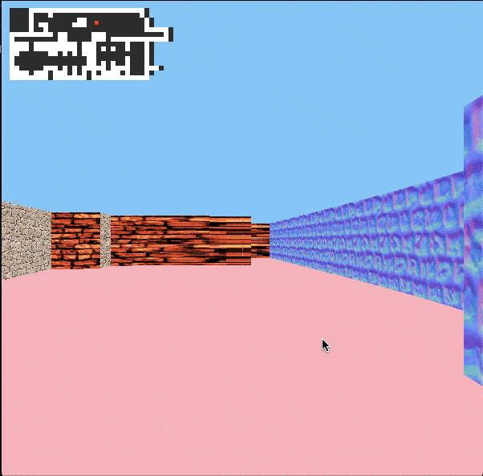
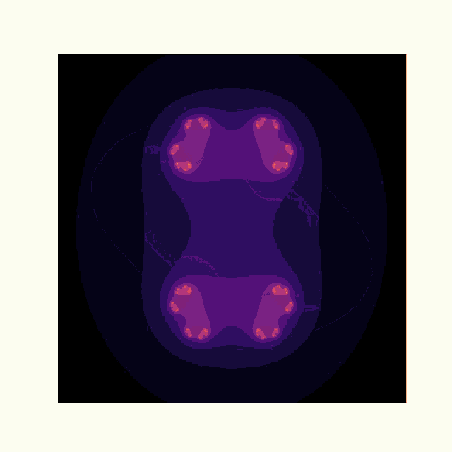

PhD Student • Data Analyst • Software Engineering @ 42 Prague
Hello! I’m Sharumathi — a PhD student who found a real love for working with data and building things with code. My background is in population genetics, where I spent a lot of time analyzing big datasets, writing Python scripts, and solving research problems. Somewhere along the way, I realized it wasn’t just the science I enjoyed, but the tech behind it.
That led me to 42 Prague, where I’ve been learning software engineering the hands-on way. Now I’m focused on combining my data skills with tech to solve real-world problems. This site is a little space to share the projects I’ve worked on and the things I’m learning along the way.
Thanks for stopping by — feel free to check out my work or say hi!
A 3D raycasting engine built in C using MiniLibX. Features textured walls, player movement, and real-time rendering.
View on GitHub A fractal renderer written in C using MiniLibX, displaying Mandelbrot and Julia sets with interactive zoom and color variations.
Reach me at sharu.na2121@gmail.com or find me on GitHub.